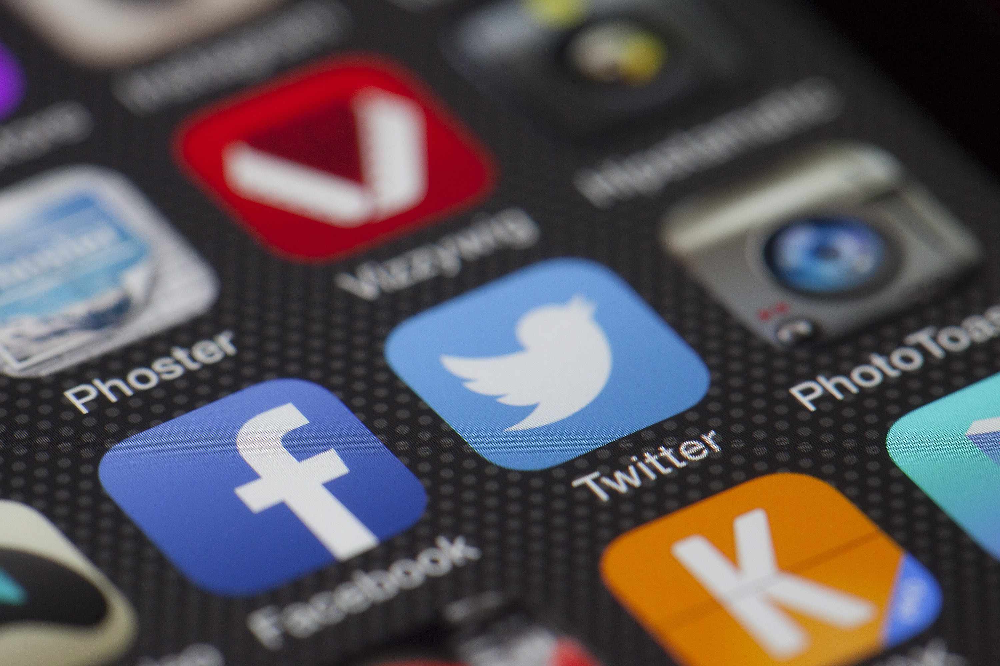

Approaches
A technofeminist approach to examining the rhetorical work of platforms pays attention to, among many things, design (Who designed the platform? Who are the corporate stakeholders and decision makers? How does the platform functionality structure activity and opportunity on the platform?), policy (What are the rules and who defines/enforces them? How is the platform governed both officially and unofficially?), materialities (What are the infrastructures that traffic and store data? How are platforms entangled with land, water, and land-based cultural practices?) and cultures (Who participates on this platform and how? Which voices or identities are discouraged or left out? How is that facilitated by design and policy?). With these questions in mind, we identify five key tenets of a technofeminist approach to platform rhetorics: social inequalities; labor; material infrastructures; networks of support and activism; and lived experiences, each of which will be explored below.
Social Inequalities
Platforms, in their design, governance, and cultures, re/create social inequalities along axes of identity, influencing the inherent “ownership” of these platforms. This sense of ownership manifests through a variety of economic and cultural practices including platform design and governance. For instance, while the economic dimensions of platforms such as Reddit or Pinterest attribute their ownership to an overarching company or financially-invested parties, cultural practices that are fortified by the platform’s design and governance structures privilege certain users, giving the network a greater sense of who has cultural “ownership” of the space. In this section, we use Twitter as an example for understanding how platform policy is designed to protect financial interests, often to the detriment of specific users. Specifically, we discuss Twitter’s failure to deal with online harassment, an issue that disproportionately affects women, as an example of how social inequalities are created and maintained through the cultures that are emboldened by design and policy.
In both public reports and academic scholarship, it is well documented that harassment has become the status quo on the internet (Duggan, 2014) and functions as a silencing mechanism to shut certain identities out of public discourse and digital publics (Cole, 2015; Davies, 2015; Gruwell, 2017; Jane, 2014a). And while harassment affects all users online, women are likely to experience more severe and sustained forms (Duggan, 2017; Jane, 2014b, Lenhart et al., 2016; Mantilla, 2015; Poland, 2016). Further, people of color are disproportionately targeted with online harassment (Citron, 2014; Duggan, 2014), particularly women of color (Mantilla, 2015) who are at risk for more intense harassment experiences as they experience misogyny in the context of racism (Bailey, 2014). LGBTQIA+ people are also at greater risk of online harassment (Citron, 2014; Sparby, 2017), and a recent survey of Twitter users who had experienced online harassment revealed that while the most common type of abuse on the platform employs “misogynistic language,” “homophobic or transphobic slurs” are used second most often (Warzel, 2016). Whitney Phillips (2015) has noted that it’s politically significant to pay attention to issues of online harassment because this kind of invective calls “attention to dominant cultural mores” (p. 7). Keeping our finger on the pulse of such attitudes is imperative in order to understand who is excluded from platforms and how these exclusions perpetuate racism and sexism to “preserve the internet as a space free of politics and thus free of challenge to white masculine heterosexual hegemony” (Higgin, 2013, n.p.).

Harassment infiltrates Twitter in a variety of manifestations. While the company is well aware of this problem, Twitter has done little to curb abuse, leading to speculation that the ties between harassment and Twitter’s financial interests are too strong for the company to implement meaningful changes. Twitter has consistently made design and policy decisions that devalue the safety of users, evidenced not only by their lack of action to decrease harassment but also by changes they’ve made that increase the abusive potential of the platform’s features.
For example, in 2017 Twitter made a sudden change related to the way “lists” works, a feature that allows users to curate lists of other users and share those lists publically. Ostensibly, this feature is useful for users to organize accounts they follow by topic or interest. Harassers, however, often use lists to create an easily shareable inventory of people they want to track or target with abuse, making large-scale, sustained harassment simple and organized. Twitter, in a move that indicates ignorance for how harassment is carried out and circulates on the platform, decided to eliminate the function that alters a user when they have been added to a list, suggesting it’s the notifications that are a problem, not the abusive lists themselves. This change resulted in immediate backlash both from everyday users and big names in the tech world (Perez, 2017), causing Twitter to reverse their decision the same day they implemented the change. Even more recently, Twitter responded to the longstanding association that its default profile picture, an egg, has with harassment by replacing it with a silhouette akin to Facebook’s default profile picture (Matsakis, 2017). One of the reasons they gave for making the change is that the association between the egg and harassment accounts “isn't fair to people who are still new to Twitter and haven't yet personalized their profile photo” (“Rethinking Our Default…,” 2017), in yet another example of the company failing to make decisions that address the systemic causes of harassment.
These decisions about the design and user experience of the platform may seem uninformed or short-sighted, but it’s in Twitter’s best interest financially to sustain abuse cultures and structures because of how many users they would lose if they cracked down on harassment in a serious way. The company has yet to become profitable since its inception in 2006 (Goldman, 2016). To become profitable, platforms need to grow their user base—something Twitter has long struggled to do over its 10+ years of existence. Twitter has, in the past, privately acknowledged that their failure to deal with harassment from a functionality and policy standpoint also results in a loss of users. In a 2015 memo to Twitter employees, then CEO Dick Costolo wrote, “We suck at dealing with abuse and trolls on the platform and we’ve sucked at it for years. It’s no secret and the rest of the world talks about it every day. We lose core user after core user by not addressing simple trolling issues that they face every day.” He went on to say he was “ashamed” at how poorly they handle harassment and pledged, “We're going to start kicking these people off right and left and making sure that when they issue their ridiculous attacks, nobody hears them” (Tiku & Newton, 2015). Within four months of this memo’s circulation, Costolo was replaced as CEO by Twitter co-founder Jack Dorsey.
Rather than internally taking the steps to better assess how harassment on their platform affects women, LGBTQIA+ people, and communities of color, Twitter decided to outsource data collection about harassment (types, reporting practices, Twitter’s response systems, etc.) to Women, Action & Media (WAM), a nonprofit focused on enhancing gender equality in the media. Through this “partnership,” the labor of working to understand systemic issues within the platform’s harassment epidemic fell onto the women of WAM, whose analysis noted that “while Twitter is a platform that allows for tens of millions of people to express themselves, the prevalence of harassment and abuse, especially targeting women, women of color, and gender non-conforming people, severely limits whose voices are elevated and heard” (Matias et al., 2015, n.p.). Their observation notably points to the ways in which harassment functions as a significant barrier to equality on the platform—barriers that reflect social inequalities that are pervasive in offline environments as well.
In an effort to close this gap by way of handling harassment claims more effectively, WAM made several recommendations to Twitter based on survey data they collected about harassment experiences on the platform. Namely, they recommended Twitter more clearly communicate how the platform defines harassment and abuse and that they do more to acknowledge how harassment is experienced and enacted in order to make changes to existing yet ineffective anti-harassment mechanisms. For instance, WAM recommended using trauma-response design methods in the design of Twitter’s reporting interface and “develop new policies which recognize and address current methods that harassers use to manipulate and evade Twitter’s evidence requirements.” Perhaps most importantly, WAM recommended that Twitter do more to “hold online abusers accountable for the gravity of their actions,” particularly in light of findings that a significant portion of harassment targets who went through the proper reporting channels found little to no resolution to their problem (Matias et al., 2015, n.p.).
In 2017, Twitter made updates to their Abusive Behavior Policy to expand on what constitutes as abuse. The policy currently states, “We believe in freedom of expression and open dialogue, but that means little as an underlying philosophy if voices are silenced because people are afraid to speak up. In order to ensure that people feel safe expressing diverse opinions and beliefs, we prohibit behavior that crosses the line into abuse, including behavior that harasses, intimidates, or uses fear to silence another user’s voice” (“The Twitter Rules,” 2017, n.p.). The policy goes on to identify four broad categories that organize how Twitter understands abuse: violence and physical harm, abuse and hateful conduct, private information and intimate media, and impersonation, and some of these categories link to even more detailed sub-policies.
While the platform has taken immense strides at providing precise language about what constitutes abuse, these policies are rendered useless if not enforced consistently and in ways that are congruent to the language that defines the policy. And users have noted that despite the changes to the policy language, there still seems to be a lack of enforcement in some cases, evidenced by a recent use of the platform by Donald Trump. On November 29th, 2017, Trump, who currently has in excess of 44 million followers, retweeted three anti-Muslim propaganda videos originally tweeted by Jayda Fransen, the deputy leader of a far-right political group in Britain. Holding Trump’s activities to the standards set forth by Twitter’s newly revised policies, many felt he (and Fransen) was in clear violation on the grounds of promoting hateful conduct and threatening a group of people based on religious affiliation. Amidst the public outcry that Twitter hold Trump accountable for his promotion of these hateful tweets, the company directed people to their Help Center (Larson, 2017), specifically the portion of their enforcement policy which says context matters in determining whether or not a use of the platform is in violation of the terms and that sometimes action is not taken on the grounds that the content in question “may be a topic of legitimate public interest” (“Our approach to policy…,” 2017). However, in an apparent reversal of their outward facing decision about leaving the videos on the platform for further circulation, Twitter Safety tweeted the following series of tweets:


Ultimately, Twitter referred to their media policy as a justification on the grounds that the videos aren’t graphic or violent enough to constitute removal. It’s important to note, however, that retaining Trump as a user is financially valuable to the company. James Cakmak, financial analyst for an equity research firm, for example, estimates Trump is worth upwards of two billion dollars to the platform based on a number of factors including the immense amount of free advertising Twitter receives as a result of Trump’s frequent and controversial use of the platform (Wittenstein, 2017). Given the subjective nature of policy enforcement and the economic interests of the company, it’s clear some users have more influence on the platform, especially those that retain monetary and cultural value to the platform, and therefore can, at times, circumvent or avoid repercussions for violating policies.
Though this brief examination of Twitter, we can see how social inequalities are upheld on this particular platform through several machinations. Namely, Twitter’s policies, governance, and concerns for users who are monetarily more “valuable” than others, work to further alienate women, people of color, and LGBTQIA+ people from participating freely on the platform. Attention to social inequalities on the platform reveals the nuanced ways that policy, design, and economics all interact with one another in ways that significantly affect the humans who live, work, and play on these platforms. In the next section, we discuss how platform labor practices, particularly those that are exploitative, are worth our attention as technofeminist researchers.
Labor
Since the emergence of Web 2.0, numerous scholars have discussed how digital economies affect the production, exchange, and circulation of writing and media content (e.g., DeVoss & Porter, 2006; Dush; 2015; Eyman, 2015; Porter, 2009). Buzz phrases like gift economy, peer economy, sharing economy, and, now, gig economy have saturated understandings of how value is consumed and distributed on networked platforms. An undercurrent in all of these discussions has been issues of digital labor. Why do web users write content? Why do they share content? And what value are they getting out of these exchanges? While these questions focus on the value individual users derive from producing and sharing digital content, other questions focus on the value commercial platforms extract from user-generated content. How can user labor be leveraged for new profits? How can user data be used, sold, and brokered to advertisers and other third parties?
In keeping with a technofeminist approach, we focus here on the latter concerns—that is, on how the digital labor of users can be exploited by corporatized platforms. Yet, in addition to this more general understanding of digital labor, we also want to draw attention to deeper means of production—or, the labor that is performed by low-waged workers who are directly employed by platforms. For us, opening up discussions of labor in this way allows researchers to pay attention to issues like content moderation, click workers, hardware manufacturing, and commissioned crowdwork jobs (e.g., Uber, Amazon Mechanical Turk, Upwork). Though it’s often understood that digital platforms are highly automated industries, our aim here is to showcase the often invisible conditions of human labor that are embedded in the foundations of the platform economy.
Many scholars have addressed digital labor issues in early Web 2.0 contexts. For example, Mark Andrejevic (2012), Tiziana Terranova (2004), and Trebor Scholz (2012), among others, have noted how the then-new Web 2.0 economy used a faux-rhetoric of participation and sharing to promote what Terranova called “free labor” or what Scholz called “playbor.” In these cases, the focus is on the complicated or unjust labor practices that have emerged in digital economies.
Such a critical stance has been echoed by rhetoric and composition scholars (especially those focused on privacy and surveillance). While individual writers might benefit somehow from producing and circulating content online, it also comes at a price when considering issues of privacy and ownership (Beck, 2015; Beck et al., 2016; McKee, 2011). Jessica Reyman’s (2013) work has demonstrated that, “the appropriation of user data creates a particular economy for writing, and establishes a particular value and exchange system for user contributions on the social and participatory Web. Current data-mining practices create an unequal exchange between unequal partners” (p. 523). Reyman’s point here is that the tech companies of Silicon Valley largely set the conditions of exchange within many digital economies of writing. Put another way, the infrastructure that makes sharing and interaction media possible—e.g., ease of participation online, folksonomic building of content, collaborative technology interfaces, and so on—propagates a rhetoric of sharing and participation that, though advantageous or valuable to individual users in certain ways, ultimately tips the scale in the hands of corporate entities that literally define the terms of service for exchange.
To this end, scholars have argued that digital labor exploitation has adversely affected women and people of color. For instance, citing statistics such as women are more likely to use Facebook than men, women contribute more original content than men, and women are more likely than men to use image-sharing platforms like Instagram, Lisa Nakamura (2015) noted that “women perform much of the ‘free labor’ of social media” (p. 223). Nakamura also pointed out that vulnerable populations such as “children, poor women, migrants, and older women” are less likely to “quit” a platform like Facebook and are thus more likely to be subjected to their surveillance and data brokering practices (p. 223). Moreover, in her interviews with women social media influencers, Brooke Erin Duffy (2017) has described how social media monetization practices have propagated what she terms “aspirational labor”—an unfulfilled promise of “getting paid to do what you love” (p. 6). Drawing on interviews with fashion bloggers, tutorial vloggers, DIY designers, and others, Duffy situated aspirational labor in “a cultural history of unpaid female labor with lenages traceable to systems of patriarchy and commodity capitalism” (p. 9). For Duffy, aspirational work has perpetrated a kind of ethos that suggests women can “make it” on social media if they work hard enough. But her interviews suggested otherwise, a technocultural fantasy bolstered by mechanisms of content monetization and a select few making it “big” in the platform economy.
In addition to widespread digital labor exploitations, deeper historical examinations of platform labor are also worth pursuing. For instance, Lisa Nakamura (2014) traced the emergence of the platform as we know it today to the manufacturing of circuit boards and computer chips at a Fairchild plant in Shiprock, New Mexico, a plant that mostly employed Navajo women. Nakamura explored the ways in which predigital Silicon Valley companies exploited women—and particularly women of color—by constructing arguments that portrayed women as having the hands and minds necessary for assembly work. On showcasing Navajo women’s “innate” and “natural” inclinations for such work, Fairchild used tropes of “a labor of love” to justify low wages and precarious job security. Under this logic, Navajo women produced “circuits as part of the ‘reproductive’ labor of expressing Navajo culture, rather than merely for wages” (Nakamura, p. 921). Nakamura’s larger argument is that the traces of this work are deeply entangled in our current digital platform economy: “The women of color workers who create the material circuits and other digital components that allow content to be created are all integrated with the ‘circuit’ of technoculture. Their bodies become part of digital platforms by providing the human labor needed to make them” (p. 920). In other words, racialized, gendered, and colonial histories of low-waged labor very much undergird our current platform infrastructures.
Of course, such conditions are not merely a footnote of the past—they manifest in the present as well. One particular strand of (often invisible) labor comes in the form of commercial content moderation where paid workers screen and filter user-generated content based upon guidelines that largely remain hidden from public view. To illustrate the complexities and responsibilities of content moderation work, we turn to a complex case involving Philando Castile, yet another Black man who shouldn’t have died, but did, at the hands of police. On July 6, 2016, Castile’s death was broadcasted on Facebook Live, a video streaming service that enables users to record and share live video. In this case, Castile’s girlfriend, Diamond Reynolds, took to Facebook Live after Jeronimo Yanez, a Minnesota police officer, shot and killed Castile after a routine traffic stop.
The livestream spread at rapid rates, moving across several social media platforms and eventually made its way to coverage on mainstream news outlets. The ethics of circulation here are complex. As Black public intellectuals such as Brittney Cooper, Roxane Gay, Sofiya Noble, and others have discussed, advocacy, activist, and other awareness efforts can easily be drowned out by the spectacle of Black death. For example, in her article published in the Huffington Post, Zeba Blay (2016) wrote about the complexities of signal boosting awareness, on the one hand, and of spreading spectacle, on the other. We quote her at length:
“The realities of racism, the gritty aftermath of it, should not be sanitized. Social media and camera phones have become an important aid in activism, tools for capturing the violence and the protests that it sparks. But something that must be acknowledged is the complications that come along with these tools. Because even as these videos and images spread the word, they also spread the dehumanization of black people and black bodies.” (n.p.)
In the time after the Facebook livestream was initially broadcasted, we see this tension playing out on public platforms. Searching Philando Castile on popular search engines and news sites will not yield results of his life, but instead of his death. And, as pictured in Figure 4.4, we see his dignity get called into question. When typing “Was Philando Castile” into the search bar, Google recommends, “Was Philando Castile a criminal?” Was he “a felon?” At the same time, many reports cited Reynolds’ video as evidence as to why Yanez was eventually charged with manslaughter and reckless discharge of a firearm (though he was later acquitted by a jury of seven men and five women—only two of whom were Black). Further, coming on the heels of Alton Sterling’s death, the livestream keyed into the #BlackLivesMatter movement and galvanized broader publics to think more critically and deeply about racial violence and implicit and explicit bias in police work.

Given the influence of the video, it is troubling to consider the circulatory life of this livestream—to think that it almost wasn’t. According to news reports in publications such as The Washington Post, NPR, and others, Reynolds’ livestream was removed from Facebook just one hour after she posted it. While the video was eventually reinstated with a disclaimer from Facebook about its graphic nature, Facebook insisted that its temporary removal was a “technical glitch.” Two days after the livestream, Facebook issued a statement and noted, “We understand the unique challenges of live video. We know it’s important to have a responsible approach. That’s why we make it easy for people to report live videos to us as they’re happening. We have a team on-call 24 hours a day, seven days a week, dedicated to responding to these reports immediately.” Facebook continued, “One of the most sensitive situations involves people sharing violent or graphic images of events taking place in the real world. In those situations, context and degree are everything.” Although Facebook routinely denies that they are a media company and instead insists that they are a more neutral tech company, we see that Facebook and, more particularly, content moderators make decisions about what to circulate and what not to circulate. And while we might praise Facebook for aiding in spreading awareness about Castile, we must realize that it is ultimately Facebook’s opaque guidelines that determines context and degree.
On many social media platforms, the labor of content moderation happens in at least three key ways: automated (algorithms filtering content), user-generated (the free labor of users who flag inappropriate content), and waged content moderation work (paid workers who determine the appropriateness of content for their contracted platform). In light of recent journalistic and first-hand accounts, it is clear that content moderators are largely following a script, a kind of checklist for what is appropriate (or not) for their platform. As Sarah T. Roberts has argued, commercial content moderators are dispersed around the world and engage in low-waged work that demands secrecy from the general public. While these workers play a key role in determining the appropriateness of content on particular platforms, they are “relatively low status workers, who must review, day in and day out, digital content that may be pornographic, violent, disturbing, or disgusting” (p. 147-148). In a recent public forum hosted by Roberts at UCLA, two commercial content moderators discussed the psychological and demoralizing effects of this kind of work. Often working based on commission, content moderators sometimes only earn a few cents for reviewing one image or other forms of content. These workers are the human element behind moderation, but as Roberts pointed out, there’s much more at play here. She noted,
“platforms make active decisions about what kinds of racist, sexist, and hateful imagery and content they will host and to what extent they will host it. These decisions may revolve around issues of ‘free speech’ and ‘free expression’ for the user base, but on commercial social media sites and platforms, these principles are always counterbalanced by a profit motive; if a platform were to become notorious for being too restrictive in the eyes of the majority of its users, it would run the risk of losing participants to offer to its advertisers” (p. 152).
The labor of content moderation, then, is ultimately designed to fade into the background and evade as much responsibility as possible. This practice can work at the advantage of commercial platforms, because such invisible labor allows platforms to appear as neutral hosting sites all while gaining profits when racist, sexist, and violent content sells.
When technofeminist researchers ask questions about labor conditions on digital platforms, they are asking questions about exploitation, inequity, and responsibility. They are interrogating the historical legacies and current realities of racism and sexism that are entwined in the precarious working conditions of emerging digital economies. They are situating platforms not as some inevitable technical configuration, but as rhetorical assemblages that obscure their profit-driven agendas. As we’ve shown, conditions of labor come in many forms in today’s platform economy, and we thus are in need of flexible and critical methodological practices. In the next section, we discuss how material infrastructures add another layer of methodological complexity to platform research.
Material Infrastructures
Although digital platforms are discursively constructed through interface design, branding, and stated policies and guidelines, they also have an expansive material footprint that stretches across the globe in the form of fiber optic cables, data centers, electrical grids, water cooling facilities, and more. For example, Amazon, a company that began as an online bookstore, has become one of the major players in the cloud platform industry. Amazon Web Services (AWS), the arm of the company that provides data storage for other corporate entities (including Adobe, Canvas, Coursera, and Netflix, among many others), boasts an expansive infrastructure of more than 90 data centers around the world. Though Amazon and other platforms provide some details about their infrastructural bones (see Figure 4.5), the full picture of such infrastructures are routinely concealed—both in purposeful efforts by individual corporate entities and in the larger social consciousness.

By infrastructure, we draw attention to those visible and invisible structures that impinge upon and make possible networked communication (see e.g., DeVoss, Cushman, & Grabill, 2005). More than technical structures and systems, infrastructures influence the relational — ethical — contours of networked life (Beck et al., 2016; Brown, 2015). By emphasizing materiality, we mean to shed light on how digital information is entangled with materialities of all kinds (cables, plastics, and metals, but also land, water, and land-based community practices). Attention to materiality, as Laura Micciche (2014) and many others have recognized, is a feminist project, as “all forms of matter, living and nonliving, are significant to sociocultural, political, as well as biological systems” (p. 491). Here, we position questions of material infrastructure as fundamentally feminist questions, as they often are entangled with conditions of environmental harm, histories of colonialism, and legacies of militarism.
Despite metaphors of clean and connective clouds that sit atop the Earth, digital data are neither immaterial nor particularly clean. In order to traffic data around the world, platforms rely on the hardwired infrastructure of the Internet, “a technology,” Wajcman (1999) reminded, “originally intended for the military and for global domination” (p. 8). More acutely, major platforms (Amazon, Facebook, Google, etc.) have an immense impact on hyper-localized ecologies, as data centers require vast amounts of energy to power and billions of gallons of water to cool. For example, a highly cited Greenpeace report from 2009, “How Dirty is Your Data?,” presented staggering statistics about the energy consumption of data centers, indicating that “the combined electricity demand of the internet/cloud (data centers and telecommunications network) globally is 623bn kWh (and would rank 5th among countries)” (p. 11). Put otherwise, according to these statistics, if all the world’s data centers formed into one country, it would rank as fifth in energy consumption worldwide. While this report remains a crucial watershed moment in documenting the environmental effects of data centers, many platforms have invested in renewable energy sources to power their centers, often presenting carefully curated depictions of efforts to increase renewable energy sources.
Still, data centers are not without their environmental impacts (not to mention that many platforms still purchase data storage solutions from companies that have not invested in cleaner energy sources). Stacked in rows from floor to ceiling in walled spaces, servers in data centers produce massive amounts of heat as a byproduct of constant computational work and the vast amounts of electricity that rush into one space. In response, data centers often rely on air conditioning and water to cool the servers and keep them online. As the data center industry has matured (and faced public scrutiny about its water and energy waste), many centers consider the physical locations of their storage sites to offset the need for expensive and inefficient cooling solutions. For example, the data center market is growing in the Arctic Circle, because, for data, colder is better and moving cold Arctic air into data centers is a cost effective way of keeping them running smoothly. In this regard, data centers fundamentally shape are shaped by the locations in which they are placed. As Jussi Parikka (2015) described, “Data demand their ecology, one that is not merely a metaphorical technoecology but demonstrates dependence on the climate, the ground, and the energies circulating in the environment” (p. 24). In other words, data centers are deeply entangled with land, water, and other geophysical elements.
The notion that “data demand their ecology” is nicely illustrated in a promotional video from Volvo that describes how the climate conditions in Sweden are apt for data driven platforms. In the video, as shown below, the former mayor of Luleå, Sweden discussed how the city attracted Facebook to locate its first international data center in Sweden. “Bringing the Facebook data center to Luleå,” he noted, “is changing the way people do things. Before they think winter is just freezing. Now they can understand that cold is a good thing for a lot of things. Data centers need cooling. We use the Arctic cold to get more from less...now the world’s data is flowing through Sweden.” This video showcases how the decisions to place data centers in particular locations are not random or neutral—platforms like Facebook understand the value of choosing ecologically sound locations for their data centers.
It might seem strange, then, that platforms would locate data centers in places in the world that don’t provide the same kind of environmental resources. But climate conditions aren’t the only considerations platforms keep in mind when choosing new data center locations; they also consider the extent to which an area has a pre-established Internet infrastructure and are persuaded even more by tax incentives and other state-sanctioned deals (such a free water rights). It is for this latter reason that Facebook has invested billions of dollars on a data center in Los Lunas, New Mexico, which is currently under construction and slated to be operational in late 2018. For this project, no such promotional video about data enjoying a certain climate exists. Perhaps data in the desert doesn’t have quite the same ring to it.
Indeed, tracing the decision to place the data center in Los Lunas reveals a different kind of story about how platforms go about choosing data center locations. According to the Santa Fe New Mexican, the state of New Mexico agreed to give Facebook $30 billion in industrial revenue bonds, giving the platform a 30-year property tax break. Furthermore, the village of Los Lunas agreed to give Facebook free water rights for a year in the amount of 162 billion gallons. And though Governor Susana Martinez heralded the deal as a move to bring long-term economic prosperity for New Mexican residents in the form of jobs, it remains unclear how many New Mexicans will be employed by Facebook, as the main construction company on the project is headquartered in Oregon and data centers typically are staffed by only a few dozen employees.
In addition to questionable economic motives, the data center is being built on colonized lands and will use water pumped from the increasingly dry Rio Grande River. Facebook’s new location is just miles from the Isleta Pueblo, whose peoples have lived along the Rio Grande valley for generations. It is difficult to grasp the deep materiality of the Los Lunas data center, but to grease the wheels of the Facebook platform—to have a smooth user experience where we can connect with friends, like cat pictures, and post messages of protest and critique—data will travel via fiber optics cables to a series of buildings in the arid climate of New Mexico. In route, that data will get tangled up with land, water, and colonial histories. How can technofeminist research on and practices with digital platforms engage such an expansive, and admittedly fragmented, understanding of material infrastructure?
As Angela Haas (2012) argued, “for decolonial ideologies to emerge, new rhetorics must be spoken, written, or otherwise delivered into existence” (p. 287). If engaging with an intersectional strand of technofeminism that redress histories of racism, sexism, colonialism, ableism, and other cultural biases, scholars might begin thinking more critically about how the material infrastructures of data intensive platforms unevenly affect communities in which they are placed. And we might think of new rhetorical approaches to do this work. To not do so entraps us in colonial practices. Malea Powell (2012) reminded us of the epistemological and material violence that ensues when we erase bodies from everyday life. She stated, “This is the biggest colonizing trick of them all—erasing real bodies in real conflict in the real world by separating mind from body, theory from practice to keep us toiling away in the service of a discourse that disadvantages almost every one of us” (p. 401). To keep analyses focused on the screen or interface or program or code alone dismisses the bodies that are often abstracted from most people’s everyday engagements with platforms. In the next section, we focus on the body from a different perspective—noting how networks of support, activism, and care can emerge on commercial platforms.
Networks of Support and Activism
Platforms, while ethically complicated in their entanglements with social inequalities, labor, and material infrastructures, also prove to be incredibly valuable for their facilitation of community organizing and activist work. Both standard and subversive uses of platforms can provide pathways for counter-hegemonic spaces to emerge, ones that provide networks of support and activism to populations who need them the most. A technofeminist approach to examining these support and activist networks on platforms, then, is attuned to the ways in which such networks shape public discourse, cultural moments, and social change. In this section, we offer a brief look at networks of support and activism that seek to raise awareness and build community among groups of people who may otherwise be outvoiced in public arenas. The creation and sustainment of these movements have proven to be effective means of (re)ascribing value to identities and discursive practices that, historically, aren’t always welcomed in public discourse.
In recent years, we’ve seen how platforms can function in ways that are akin to the consciousness-raising groups central to the feminist movement in the 1960s and 70s. These groups worked to bring more people to feminism and increase the public consciousness about women’s issues by creating a space for women to share their stories and analyze personal experiences in relation to gendered oppression. The discussions that took place in consciousness-raising groups acted as a precursor to direct action “in an effort to change social conditions” (Rhodes, 2005, p. 35). Such action often took the form of collaboratively composed public writing meant to make the concerns of the feminist movement more visible to the general public (Rhodes, 2005, p. 26). Compare this kind of writing to that which occurs on platforms such as Twitter or Facebook and we see how feminist spaces on the platform, like particular hashtags, act as networks of support and activism—places where personal expression happens simultaneously to the raising of public consciousness. Despite claims that social media platforms create weak social ties and conditions that are detrimental to activism (see, for example, Gladwell, 2010), a variety of scholarship demonstrates the power platforms have for people to create strong networks of support and engage effectively in activism (Christensen, 2011; Haas, 2009; Hayes, 2017; Lane, 2015; Penney & Dadas, 2013; Tufekci, 2017). Such networks are particularly important for women, who can use them to amplify and share narratives, circulate educational resources, and support one another on a global scale, (Dixon, 2014, p. 39). This level of support and action, Kitsy Dixon (2014) has argued, can change the nature of feminism itself.
However, the consciousness-raising groups of the 1960s and 70s that predate the digital platforms we discuss in this webtext, were not without problems. Feminist activists regularly disagreed about the “content and purpose within discussion groups,” (Rhodes, 2005, p. 26) leading to varied approaches to the practice. Furthermore, these were spaces generally made up of “mostly white, mostly middle-class women,” meaning the concerns of such identities were usually the focus (Rhodes, 2005, p. 35). This phenomenon, in many ways, has translated onto digital platforms that are widely used for coalition building. In 2013, Courtney Martin and Vanessa Valenti of Columbia College’s Barnard Center for Research on Women published what would become known as the #FemFuture Report, a look at how feminism is and can be enacted and sustained in online platforms. The report was written after a diverse group of women engaged in online feminist practices gathered to talk about the issues they face in their work. In a section titled “What is Online Feminism,” Martin and Valenti noted that the consciousness-raising groups of the 1960s are now online, only “instead of a living room of 8-10 women, it’s an online network of thousands” (p. 6). They went on to outline what they see to be the most important aspects of online feminism and how the internet can be used for feminist support and action.
Once the report was released, it immediately received backlash from the online feminist community via the cross-platform tag #FemFuture for “what appears to be U.S.-centric, mainstream, feminist elitism and historical erasure of radical women of color spaces and communities” (Loza, 2014, n.p.). While the initial gathering of women to discuss the future of online feminism was made up of “a racially diverse group of feminists engaged online—a fact mentioned often to defend the report as inclusive,” #FemFuture ultimately focused on “the vision of Martin and Valenti” (Daniels, 2016, p. 52), both of whom are white women. By centralizing white women and white feminism in the writing of and content within the report, #FemFuture revealed that longstanding fissures along axes of race within feminist movements remain in the new digital era.
Yet, users’ abilities to use platforms to highlight those fissures ultimately became its own powerful source of support and activism. Part of why the #FemFuture report’s inattention to race is so troubling is because platforms have introduced new potentials to feminist movements in the form of increased visibility and amplification mechanisms for women of color, who may be excluded in other arenas (Krogstad, 2015; Tobin, 2013). For example, speaking directly to the harmfulness of white feminism, like that on display in the #FemFuture report, Mikki Kendall created the hashtag #SolidarityIsForWhiteWomen. The tag was specifically created in response to prolific blogger and self-identified feminist Hugo Schwyzer’s admittance that he deliberately attacked other bloggers, primarily women of color, for critiquing his work. Kendall’s tag was meant to convey her frustration that Schwyzer was given an outlet to berate women of color through feminist blogs run by white women. #SolidarityIsForWhiteWomen turned into “an impassioned debate about the continued exclusion of [women of color] from mainstream feminism” (Loza, 2014, n.p.) and white feminism’s frequent appeal to an illusory solidarity. The tag also served as a network of support for other women who held the same concerns and was tweeted over 75,000 times in just four days (Loza, 2014, n.p.), enough for it to appear on the trending topics list on Twitter. The tag’s longevity is evidenced by its continued use today.
Access to spaces where women and other marginalized groups can build support networks and draw greater attention to the issues that concern them the most is essential, and the Federal Communications Commission’s recent vote on December 14, 2017 to repeal net neutrality protections is predicted to significantly impeded that access. Commissioner Mignon Clyburn, one of two women on the commission, both of whom cast the only votes to protect net neutrality, noted in her dissent why access to platforms is critical, particularly for people of color to build networks of support and activism. She wrote,
Particularly damning is what today’s repeal will mean for marginalized groups, like communities of color, that rely on platforms like the internet to communicate, because traditional outlets do not consider their issues or concerns, worthy of any coverage. It was through social media that the world first heard about Ferguson, Missouri, because legacy news outlets did not consider it important until the hashtag started trending. It has been through online video services, that targeted entertainment has thrived, where stories are finally being told because those same programming were repeatedly rejected by mainstream distribution and media outlets. And it has been through secure messaging platforms, where activists have communicated and organized for justice without gatekeepers with differing opinions blocking them. (qtd. In Lecher, 2017, n.p.)In other words, platforms can be used to fill in the holes left by mainstream culture that often favors hegemonic perspectives and identities. The instances Clyburn cited in her dissent point not just to how intersectional networks of support and activism can rise and sustain on platforms, but also to the frequency with which marginalized groups turn to these platforms when they aren’t being heard elsewhere.
A more recent example is that of the women and men who used platforms such as Facebook, Twitter, and Instagram to share their personal stories of sexual harassment and assault. For many, this occurred through the use of the tag #MeToo. As a slogan, “me too” originated in the early 2000s with Tarana Burke who used the phrase in her activist work to draw attention to issues of abuse that Black girls and women face. The tag #MeToo went viral in October of 2017 when, in response to sexual assault allegations made against producer Harvey Weinstein, actress Alyssa Milano tweeted, “If you’ve been sexually harassed or assaulted, write ‘me too’ as a reply to this tweet” (Milano, 2017).

While the tag was tweeted in excess of 1.7million times in its first week of use (Park, 2017), many were quick to point out that Milano, a white woman, failed to attribute the phrase to Burke, a woman of color, in her original tweet. The day after posting her original tweet, Milano tweeted, “I was just made aware of an earlier #MeToo movement, and the origin story is equal parts heartbreaking and inspiring,” along with a link to Burke’s organization, Just Be (Milano, 2017). In an interview with Glamour magazine, Burke said, “I have to admit that when [Milano] first tweeted #MeToo, my initial reaction was panic. What if this becomes a popular hashtag, I thought, but it’s not related to the groundwork I laid out?” (qtd. in Leach, 2017). Burke decided to participate in the network of support by posting a video “about how empathy can help survivors of sexual assault.” She said, “It went viral in a way that was like, ‘We won’t let this Black woman be erased from her work.’ Then, a different kind of panic set in. I thought, ‘oh my god. This is mass disclosure across the internet and there’s no after care. Who’s going to have the discussion of what #MeToo is really about?’” (qtd. in Leach, 2017).
Ultimately, this cultural moment led to Time Magazine naming “The Silence Breakers” as “Person of the Year,” a title that’s traditionally reserved for a single entity (Zacharek, Dockterman, ∧ Sweetland Edwards, 2017). Burke and Milano are two of the highlighted individuals in the story, and #MeToo is featured as one of the influential global moments that defines this year of the Silence Breakers. For Burke, the powerful network of support created throughout a variety of platforms “has been amazing at drawing the kind of attention we’ve never seen to sexual violence,” (qtd. in Leach, 2017). However, networks of support must also include mechanisms that acknowledge what happens after these networks are created and awareness is raised. What can networks of activism via social platforms offer communities like sexual assault survivors? What new forms of support can be offered and what action can be taken? These are the types of questions Burke is pursuing in the wake of the #MeToo movement, as she says we now have to start processing what happens after our disclosures and after this viral moment: “We keep talking about how many millions engaged with the movement, but even if just 10 percent of those people stay committed to the work, we will have created an incredible army. Because, the power of #MeToo isn’t just naming it. Naming it is just the beginning of the journey” (qtd. in Leach, 2017).
These networks of support and activism created via platforms give way to larger conversations and action that has had material affect on social circumstances. The writers of the Fem Future Report, for example, directly responded to critiques and ultimately considered those perspectives in revising their strategic vision. Kendall’s work has raised greater awareness about the ways white women co-opt the oppression of Black women in their attempts at equality without examining how race impacts gendered experiences. The events in Ferguson and ensuing documentation on platforms by everyday users referenced by Commissioner Clyburn changed the conversation about police brutality and racial injustices in the United States. And the influx in sexual harassment and assault survivor’s disclosures, as well as their use of #MeToo, has been part of inspiring a cultural moment where sexual harassment and assault are now a part of daily conversation, leading to more accountability for perpetrators. These networks not only serve as sites of community-building but archives of lived experiences as well. In the next section, we discuss the importance of lived experience in technofeminist research and describe how pieces of our own stories have shaped our work in platform rhetorics.
Lived Experiences
In researching platforms, which have become deeply embedded in our everyday live, we are drawn to technofeminist methodologies because they seek to restructure our social realities while accounting for the researcher’s experience with and position within the topic. Kristine Blair (2012) has noted technofeminist methodology “intertwines the personal and the political, situating technological literacy in a range of familial, educational, and professional contexts that have often marginalized women’s voices” (p. 64). This feminist triangulation is done with “empowerment in mind” in ways that incorporate the subjectivity of the researcher because technofeminist researchers “are often personally and politically connected to the groups they study” (Blair, 2012, p. 67). Therefore, the researcher’s own story becomes crucial to the transparency of methodologies and methods as they draw on their insider/outsider knowledges relevant to the communities of study. Certainly, Bridget and Dustin are personally and politically connected to the variety of topics and communities we discuss throughout this webtext. Therefore, we feel it necessary to use this section in order to share brief snapshots of our lives that illustrate how.
Individual stories, whether they are participants’ stories or our own, are a necessary part of technofeminist inquiry into platform rhetorics because emphasizing narratives of lived experience helps us to reconstruct our understanding of the world to include diverse ways of meaning and knowledge making (Hemmings, 2011; hooks, 1984; Rich, 1995; Rhodes, 2005), which are unfortunately too often undervalued by mainstream and academic epistemologies. Blair (2012) has argued that emphasizing narratives of lived experience is “a potentially powerful form of technofeminist, activist research” (p. 68), because women’s stories, in particular, are so woefully undervalued in many arenas. Both Bridget and Dustin have had to confront their own insider/outsider knowledges, positionalities, privileges, and personal histories in writing this very piece. And while we could write exhaustively about those knowledges, positions, and histories, we each offer a representative story here. It’s our hope that the reader see these stories as a method, of sorts, for confronting how it is our researcher identities are inextricable from our personal ones.
Bridget
On the night of August 4th, 2016, just two days after publicizing my survey about sexist online harassment I had designed as part of my dissertation work, I received an email from a man saying he is a “well connected male troll” who was forwarded the link to my study and had passed it on to several women he knew who might be able to contribute to the research seeing as I was gathering participants who had stories of harassment to share. It was a bizarre email. I hadn’t yet received any formal inquiries about the survey, and I was taken aback by the sender’s tone. He claimed to want to help, but he was also strangely antagonistic about the women he suggested would be suitable for me to interview. At the end of the email, he offered to be interviewed before writing, “I am fairly civic minded and interested in policy, despite my poisonous public reputation.” It seemed he wanted my research to capture another side to the women’s stories I was gathering and wasn’t threatening in any overt way. But I couldn’t help lingering on the phrase “poisonous public reputation.” What did he mean by that?
I read the email after waking up in the middle of the night with anxiety about the increased attention I was receiving on Twitter as a result of publicizing the survey. In the two days it had been up, it was not uncommon for me to return to my computer or phone to find upwards for 30 or 40 notifications, more than a few of which were mentions from harassers lobbing gendered insults and vague threats. Each time this happened, I experienced a twinge of nervousness that when I would click on my notifications, I would find I had been doxxed. Part of me was simply waiting for it to happen. I thought about all of the stories I had read over the past several months of women who had been severely harassed, including doxxed or swatted, for simply pointing out that harassment is a problem.
Laying in bed, the light from my phone illuminating only my face, I immediately tensed after reading this email, and my eyes rescanned “poisonous public reputation.” I googled the sender’s name. The top results were articles about his involvement in litigation over doxxing a woman through revenge-porn, publishing sexually explicit pictures or videos of someone without their consent. Looking through some of the search results exacerbated my anxiety as my fears were potentially being confirmed. This man, as promised, indeed had a poisonous public reputation, and he also had skills that he used to harm women. Paranoia set in and I touched the tiny X in the corner of my phone’s web browser.
Thinking about all of the women I read about or met who had been threatened, doxxed, swatted, or had men show up at their houses in the middle of the night to assault them, I popped out of bed to triple check that all of my doors were locked. I went to the sliding glass door off of my dining room, confirmed that it was indeed locked, and idled there staring out into the darkness of my backyard. I imagined what it might look like if a group of law-enforcement officers, dressed in all black and carrying rifles, crept across my property in the night on a phony tip that I was, maybe, a bomb-maker. And then the motion light on my back deck came on, and I skittered back to bed to wake up my partner.
I was not doxxed, or swatted, nor did anyone show up at my house to threaten or assault me. Nonetheless, it was not unreasonable for me to feel like these things could very well be right around the corner. Truthfully, even writing about this experience here and now and the thought of putting it online in this webtext makes me nervous. But our stories—our lives, our histories, our experiences, our comings and goings, whether online or off—are important. To stop and consider how is paramount.
Dustin
Certain life paths have lead me to study the entangled senses of damage caused by data-intensive platforms. There’s community damage: Amazon, for example, has threatened to seize land owned by African American communities in Virginia in order to construct high-voltage power lines to feed their nearby data centers with electricity. There’s environmental damage: through its surveillance operations that intercept data from several social media platforms, the National Security Administration’s Utah data center uses billions of gallons of water every day to track and trace our every move (Hogan, 2015). And there’s colonial damage: Facebook’s decision to build a data center along the Rio Grande River in New Mexico on land that sits only a few miles away from the Isleta Pueblo whose people have lived along the river for centuries.
You see why I use entangled—it’s damage all the way down.
I’m entangled in this story, too. I grew up in Silver City, NM, a small town in the Southern part of the state. I grew up relatively poor, in a trailer, and without what my dad called “city water.” For a time, we got our water from a well drilled on my family’s property, but when I was about ten years old, it went dry. And so every week my dad would load plastic tank into his pickup truck and haul water—city water—from my grandma’s line. When the shower started to spit air, it was time to repeat the process. Rinse (quickly) and repeat.
It is this experience—and countless others (driving over dry river beds, watching neighborhood kids perform rain dances in early summer droughts, watching smoke fill the skies as forest fires tore through bone-dry trees, and feeling in awe and a bit uncomfortable in water-rich areas like my current home in Florida)—that brings me into this research. How can Facebook justify the placing of its infrastructure in an ecology that is incompatible—inhospitable—to its needs? How can Facebook justify using water pumped from desert aquifers along a river that’s headed toward a permanent drought just to satisfy its cooling needs? How can Facebook justify deploying narratives of regional economic prosperity in a deeply impoverished state when, in all actuality, it will only employ a few dozen employees?
My story says it can’t.